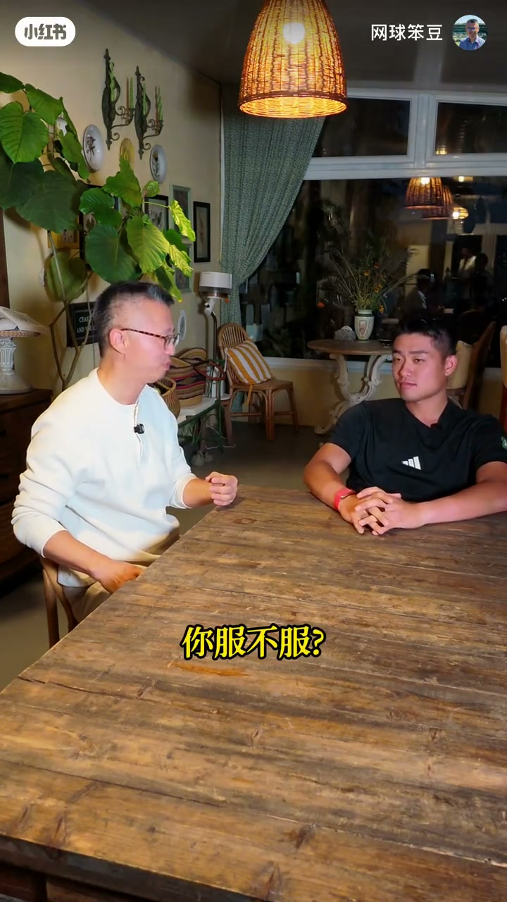
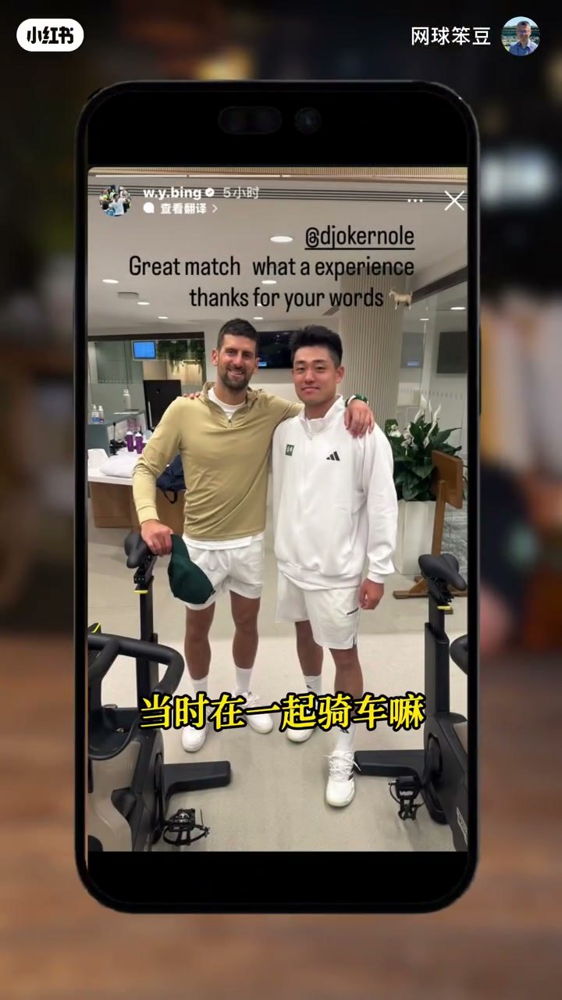
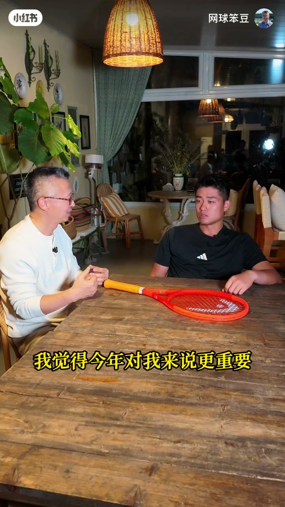
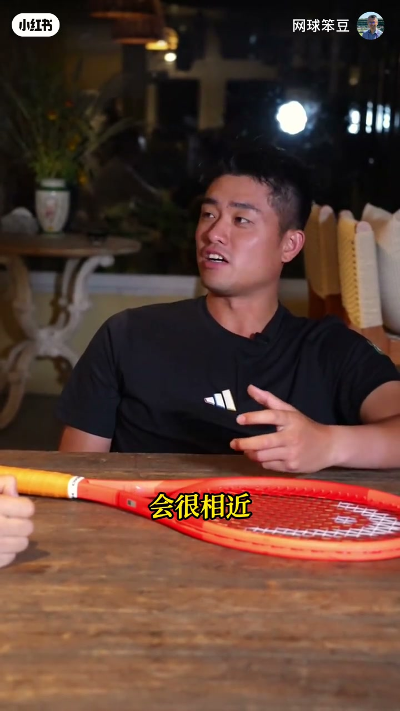
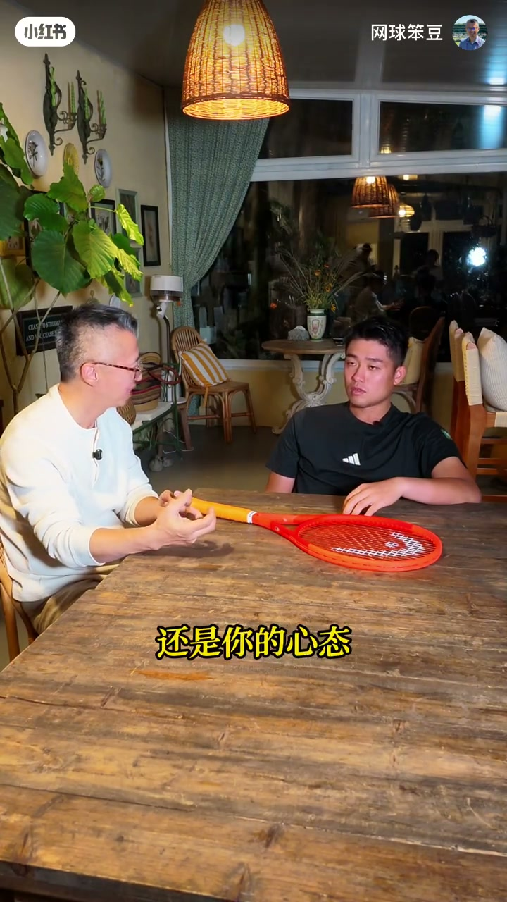
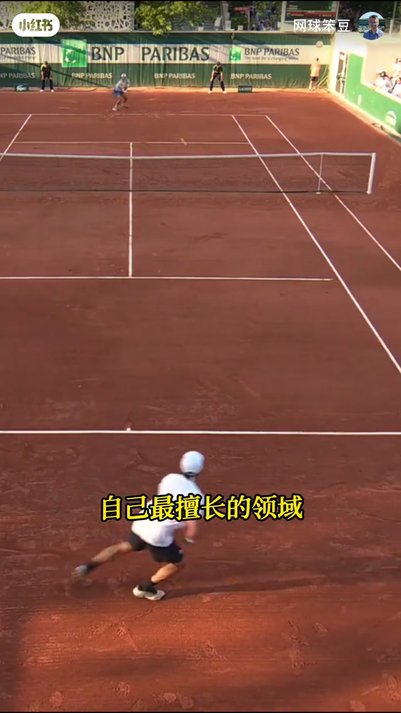
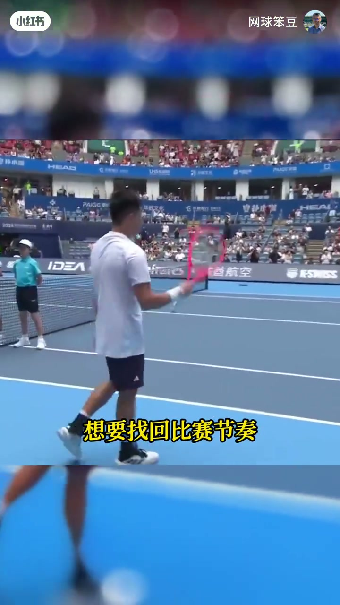
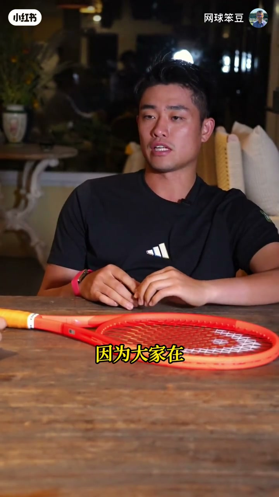
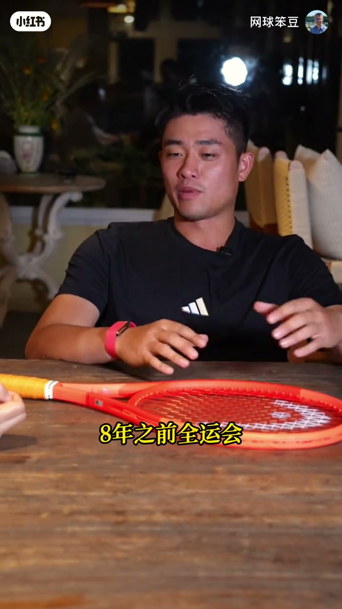
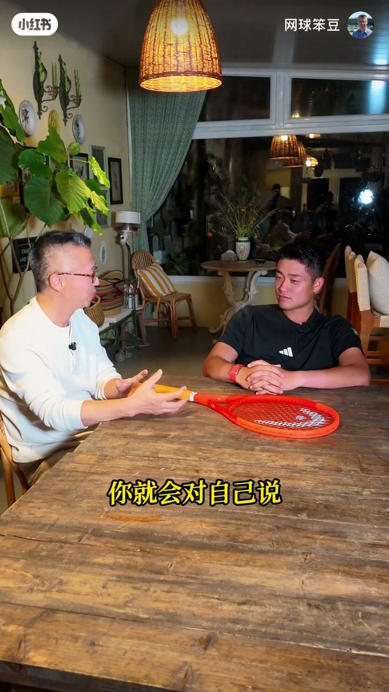

内容要点
「网球笨豆」长访谈回看吴易昺（阿炳）本赛季与四大满贯：温网首轮对德约科维奇虽负但「不服」、幕后健身房骑车合影；澳网/法网/美网赛季首胜与美网青少年福地、重返前百；最满意的是健康管理与学会 reset；谈撕掉伤病/红土标签要靠康复与训练而非口号；手术复出多次后仍想打漂亮有进攻性的网球；为亚运会金牌放弃杭州站保分；展望 2026——「前三十就可以了」。口播含少量 ASR 音近误识（四大满贯/阿尔卡拉斯等），叙述已按网球语境校正。
知识结构
最出圈是输给德约；不服；幕后骑车合影；温网是神圣殿堂。
今年除温网外三大满贯有胜场；澳网自我不满；美网福地回前百。
最满意健康管理；学会停下来 reset；撕标签靠康复与红土训练。
六七年多次复出；想打高 baseline 的漂亮进攻网球；排名≠真实实力。
弃杭州保分打亚运金牌；公开目标释放压力；2026 满意线=前三十。
阿炳把 2026 写成可核对的两件事：身体能连续参赛，以及排名站上前三十——好看网球建立在健康与基本功 baseline 上，不是标签口号。
00:00-01:34温网对德约：不服，以及健身房里的合影
开场：四大满贯里三个有赢球，但最出圈的是温网首轮输给德约——问服不服，答「我不服」「希望下次最出圈是我赢的那场」。两个月内先后在温网对德约、在硬地大舞台对阿尔卡拉斯；温网对他更特别：青少年就觉得是网球神圣殿堂，退役前高水平交流既荣幸又不甘，因感觉有赢面。对阿尔卡拉斯那场则自评双方都没发挥很好。
德约赛后发言称赞其表现（英文口播）；追问幕后：当天最后一场，健身房没别人，两人一起骑车，阿炳主动要求合影纪念，对整个团队都有意义；德约叮嘱保持健康、继续打。还提到 2017 蒙特卡洛东训第一次对打的缘分。


01:34-03:20打通四大满贯年份：澳法美的首胜与美网福地
2023 首次打满四大满贯；今年除温网对德约外，其余三大都有胜场——阿炳觉得今年更重要，可惜温网还没赢过球，但「明年一定可以」。主持人感慨正赛次数还不到两位数却已两次「打通」；他回应：不必为过去可惜，重点是吸取经验，在保持健康下推进巅峰几年。
澳网是今年对自己较不满意的赛事：前几场很好、生病也顶过来，输的那场太想站到更大舞台。美网则是中国球员福地——三人青少年大满贯单打冠军都在美网拿过，场地或与小时候训练环境相近；这次也把世界排名打回前百，他本人说没特别在意排名，已专注亚运会会战，并转发周杰伦帖子觉得「挺爽」。


03:20-06:20健康管理、reset，以及怎么撕掉标签
社交媒体：很久没直播，开始在评论区玩梗，想跟国内球迷多连接，也是调整心情。「对本赛季最满意的方面」他选健康管理：连续参赛陌生，学会停下来让身体和思想 reset；进入巡回赛 routine 后连轴飞下一站、换酒店订机票再训练，对精神冲击很大。呼应旧采访金句：不要轻易贴伤病标签，也不要贴「我不会打红土」——撕标签要做实事：想去掉伤病标签先要做到没有伤病，靠大量康复与体能，不让身体发出疼痛；红土不最擅长也要通过训练感到「今天比昨天好一点」。进前五十/三十最需要的是延长打出好球的时间，并管理参赛计划；运动员拼劲有时会忽略真正需要什么。与康复师聊心理层面：疼痛反应不能直接称为伤病，常出现在参赛前，要克服紧张。


06:20-08:50多次手术复出，与「不想沦为中庸」的网球
外人看到美网进第三轮、回前百、对德约虽败犹荣；他补充大家不知道的难：六七年里复出估计四五次，多数球员职业生涯手术很少，而每一次复出找回比赛节奏都很难——希望经验能分享给别的运动员，最好大家都别受伤。媒体和球迷爱说「永不言弃」，四字太重；他承认很多次想过放弃，但放弃念头最终输给相信自己，「对认定的事比较固执」。
关于「好看的漂亮网球」：青少年有时会追求不必要的动作；现在要的是很高的 baseline 与基本功，因各场地对手都在进步。坚持自己的打法也是一种固执——不想沦为中庸，要在最擅长领域做到顶尖。对「健康打下去能进前三十/二十」的评论：球迷概念模糊；疫情后一代中国球员的成功，是让大家看见与顶尖交流时真实水平；排名客观但不能完全反映实力，受伤几个月大分就扣掉。


08:50-10:57亚运金牌重于杭州保分，2026 满意线是前三十
去年杭州连胜拿大分；今年为亚运会不仅不打杭州，连中网也可能错过，刚进前百的分可能扣掉——职业球员都不想被扣分，但亚运比 ATP 分数或奖金更重要。八年前全运/亚运都差一点点，这次全运已夺冠，希望亚运拿下金牌；若在「杭州再进四强/夺冠」与「亚运夺冠」之间选，选亚运。目标早早说出来是释放而非藏着：去打这个比赛若目标不围绕金牌，还不如不去。
希望被记住的形象：最有天赋、球最好看、永不言弃、最有意思——他说都可以，但永不言弃也跟水平挂钩。问 2026/2027 做到什么程度会对自己说「阿炳你是好样的」：答「就三十，三十就可以了」。


完整转录（311段）
以下文本由 Whisper medium 模型自动转录，可能存在少量识别误差，已尽可能修正。
今年四大晚馆你在其中的三个都赢了球
但是最出圈的是温网首轮
输给德约的那一场你服不服
我不服
我希望下一次我最出圈是我赢的那一场
两个月之内你首先在温网的这张球场面对着德约
然后不久前又在阿斯拉什球场面对阿尔卡拉兹
我知道你是非常喜欢大舞台的
这两次大舞台的经历有什么不同
还是温网对我来说更特别一些
温网是我最喜欢的比赛
青少年的时候去了温网
然后感觉到就是网球神圣的殿堂
非常特别的这个时刻
然后也有机会跟我们勾搭
在他退役之前非常高水平的交流
我首先觉得很荣幸
但也是不服了
因为感觉是有赢的机会的
跟阿卡这场比赛
我觉得我们两个人其实都没有发挥的很好
打完比赛德约在发言中说
Vood deserves a huge round of applause for his incredible performance
这是我们能看到的
你能不能把我们带到幕后
给我们说一些我们看不到的
我们是当天最后一场比赛
健身房里也没有别人
我们在一起骑车
我是问他合影
觉得有必要纪念一下这个
对我来说或者说对我整个团队来说
都是一个有纪念意义的时刻
然后他也是说
希望我可以继续保持健康
然后可以继续打
17年我在蒙特卡洛跟他们东训的时候
这是我们第一次打球
他可能觉得我还是20岁出头的小球员
对其实我感觉也是算是马上步入中登了
2023年你是第一次把四大板关全部打下来了
取代梅网赢过一场
但是今年你除了温网打德约这场
其他的三大板关都有赢球
我相信这两次能把四大板关打通的年份
对你来说意义还是很不一样的
是我觉得今年对我来说更重要
挺可惜的在还有温网还没赢过球
但是我觉得明年一定可以做到
看你的大板关战绩的时候我就很感慨
因为我们说的这两年的8次
加上2022年的你的第一次
其实你打大板关正赛的次数
还没有到两位数
每次看到这些数据都会忍不住想
如果吴亦宁打到现在26、27岁
已经可以打到20多次大板关的话
他不知道能干出什么事情来
过去的再去为以前做过的一些事情而可惜
我倒觉得没有必要
就是最重要的是吸取经验
现在更应该注重的是
我们如何在保持身体健康的情况下
顺利可以推进接下来巅峰的这几年
我们刚才说的比较多的是温网和美网
你能不能说一下
今年的奥网和法网
其实你也是取得了赛事的首胜
奥网其实是我今年对自己比较不满意的
特别是输的那一场
其实前几场都打得非常好
我在生病的情况下也顶过来
然后也非常热
只是我太想要站在星大面前
今年你在法拉盛游走的时候
你会想到
我当年在这拿青少年单双党双量冠军
必须的
不光是我
我觉得对于大家中国球员来说
还是都是福地
我们三个单打的青少年大板冠军
都是在美网拿的
我觉得是不是美网场地
跟我们小时候训练的环境会很相近
那么这次美网确实是一个福地
也把你的世界排名打回了前100
你觉得这对你来说意味着什么
或者你觉得它对你并不意味着什么
因为你还有更高
对我觉得还好吧
其实都没有怎么特别在意排名这个事情
我现在已经完全专注在亚运会的这个会站上面
那么最近也是转发了周杰伦的帖子
对
是不是觉得你的精彩表现
让我的偶像更多的看到了我
是啊
我觉得挺爽的
很爽
那么说到社交媒体的话
你已经很久没搞直播了
但是我觉得你最近开始
就是在评论区开始玩梗
快回国了
然后会想跟大家多一些互动
然后也是自己调整心情的一种方式
因为我也不想总是憋着
跟国内的球迷们还是有一定的连接
会对于我在精神上面会有一些帮助
所以中国的球迷对你来说真的很重要
当然
如果选一个你对本赛季最满意的方面
你觉得会是什么
比如说是成绩
你的健康管理
你的打法的提升
还是我觉得是健康管理
连续的参赛对于我来说
其实算是比较陌生的
没有连续打过很多战比赛
那么我也学到了一点
要停下来休息
要学会让自己的身体跟思想都要 reset
一旦你进入了巡回赛的routine之后
你往往会觉得
我这一周打完
马上又飞下一周换酒店
然后订机票
然后又训练
其实对于人的精神来说是很大的冲击
去年你在杭州公开赛说了一句好意
我到现在都记得
不要把自己轻易贴上伤病的标签
那么今年红土赛季采访你的时候
你就是说
不要给自己贴上
我不会打红土的标签
你会不会觉得每撕到一个标签
就生发出一个新的自己
说起来其实很简单了
就是想要退掉这个标签
但是其实是需要做一些实际的事情
我想撕掉伤病标签的话
我首先要没有伤病
需要大量的康复
大量的体能训练来维持
我不让自己身体上发出任何疼痛
我自己告诉自己的
我可能红土不是自己最擅长的领域
但是也要通过不断的红土训练
会觉得今天好像比昨天感觉好一点
这些正向的东西
其实也是在我撕标签的路上
帮我加了一把力
现在已经打入前100了
如果进到前50甚至前30
你觉得最需要提升的方面是哪些
要延长自己能打出好的网球的时间
还有就是要管理好自己参赛的计划
其实我自己是对自己身体最了解的
但是有时候我可能会
因为运动员的拼尽
或者是想去参赛的感觉
而忽略掉我真正需要什么
做的好的话
其实我觉得排名上应该也不会满
这一点我觉得在今年得到的比较好的解决
就是我在思想上没有给自己那么大的压力
我跟我的康复师也有深入的聊过
我们心理层面对于这个伤病的影响
有疼痛的反应而已
它不能称为伤病
往往都发生在我要参加一些比赛之前
自己要做的就是慢慢克服
让自己不要处于一个非常紧张的状态
那么没忘打到第三轮
然后进到前100
大家肯定有很多掌声
打得约虽然输了
大家会说岁败犹荣
这些都是大家能看到的
你能不能跟我们说一下大家不知道的
比如说过去几年你最难的时候是什么
做完手术要康复
大多数球员可能职业生涯当中
不会经历手术
或者经历一次
或者经历两次
但是我其实已经在六七年里面
复出估计都有四五次了
其实复出一次想要找回比赛节奏
都是很难的事情
我也希望能够用我这些经验分享给别的运动员
最好当然大家都不要受伤
那么我们不管是媒体就喜欢写
这四个字永不延续
球迷也喜欢说这四个字
有时候对球员来说这四个字实在是太重了
你有没有想过放弃
很多次想过放弃
但是最终也都还是坚持下来
想要放弃的念头
还是输给了我相信自己的这个念头
我可能对于认定的事情会比较固执
我们都知道吴玉平打球的网球是
特别的只属于你的网球
你也总是说我希望打出超强的进攻性
打出好看的漂亮的网球
那这么多年你对好看的漂亮的网球
理解是不是也变得不一样
因为青少年的时候有些球会赢得比较轻松
追求一些可能完全没有必要的一些动作什么的
我真正想打出的网球
它是需要有一个很高的一个baseline
就是有很高的很好的基本功
因为大家在各个场地上面的各个方面
都有很大的进步
对于我来讲我能坚持自己的这个打法
首先也是我的一个固执
就像刚刚听到的
那也是我不想要沦为中庸的球员
我希望在自己最擅长的这个领域
能够把它做到最顶尖
那每次你打得好的时候
我们社交媒体的评论区通常有两种声音
一个是阿平他就太好看了
经常肯定也会看的
另外一个说的特别多的
如果阿平能够健康的打下去
他的上限肯定是什么前30甚至前20
这种声音当然代表着球迷对你的喜爱和欣赏
我会觉得他跟我想的一样
球迷看球他可能觉得如果说我能打成这样
我可以进前30
但是他对前30的概念其实是模糊的
像疫情刚刚解释的时候
我们那个时候还没有前100的球员
教练在要求你的时候
你要是这个反手打成这样
你永远也见不了前100
或许那个时候我已经有前100的能力了
只不过你教练不知道前100究竟是怎么样
我觉得我们这一代人就是成功了
让大家都见到我们球员在跟别的顶尖球员在交流的时候
他们的水平到底是怎么样的
维持住也是一件比较难的事情
因为每个人他自己的节奏都不一样
有时候你可能受伤几个月
你的大分就在那几个月就扣掉了
我觉得排名它虽然是一个比较客观的数据
但是不能反映一个球员真正的实力
说到大分和扣分正好是我的下一个问题
去年你在杭州连胜了马纳瑞诺
柯达和梅总拿了一笔大分
今年你是因为要参加亚运会
不仅没有机会打杭州
甚至没有机会打后面的中网
刚进前100说不定这笔分扣掉以后
你又不是世界前100了
其实损失是非常大的
能不能给我们说一下你的抉择
当然职业球员都不会想被扣分
但是亚运会对于我来说
也是比只是ATP的分或者奖金
我觉得更重要一些
8年之前全运会也是差一点点夺冠
然后这次全运会夺冠了
亚运会也是8年之前差一点点
所以我希望今年的亚运会
我可以成功的拿下这枚金牌
如果说你让我选在杭州
再打进一次前四
或者说在杭州拿冠军
或者说在亚运会拿冠军
我觉得亚运会会对我来说更加重要一些
这个目标这么早就说出来
你觉得这是会施加压力
还是释放压力给自己
就像我全运会之前讲的一样
我就是想来拿金牌
但我也没有什么好藏的
如果说我去打这个比赛
我的目标或者说我想做的事情
不是围绕我拿金牌的话
那还不如不要去了
那么经过了这么多反复之后
你希望球迷以怎么样的形象
来牢牢的记住你呢
比如说最有天赋的打球最好看的
最永不言弃的
还是最有意思的
都可以
我觉得你说的这四个我觉得都可以
永不言弃
我觉得这个东西
也是跟你水平挂钩的
你0606输给一个人
你可能也是没有放弃
就能追回来
其实除了永不言弃以外
还是跟你的水平有关系
2020赛季还没有过去
但是2026的吴亦敏
已经让我们非常期待
2027年的阿炳了
2027你做到什么样的程度
你就会对自己说
阿炳你是好样的
就30
30就可以了